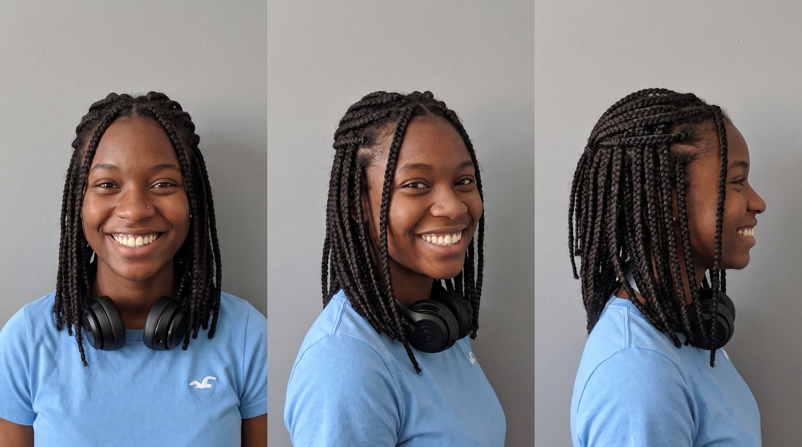
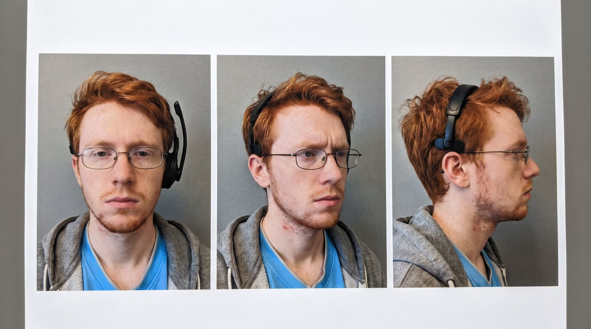
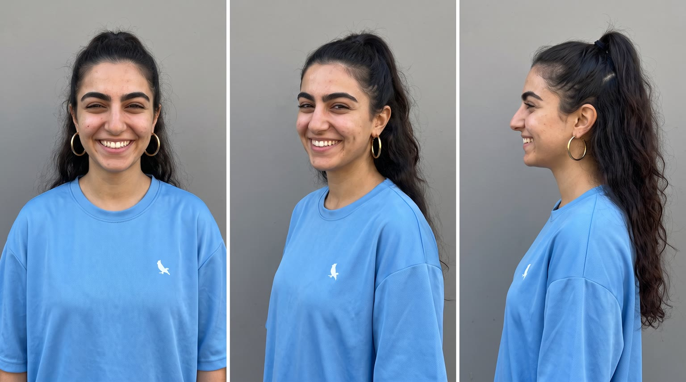
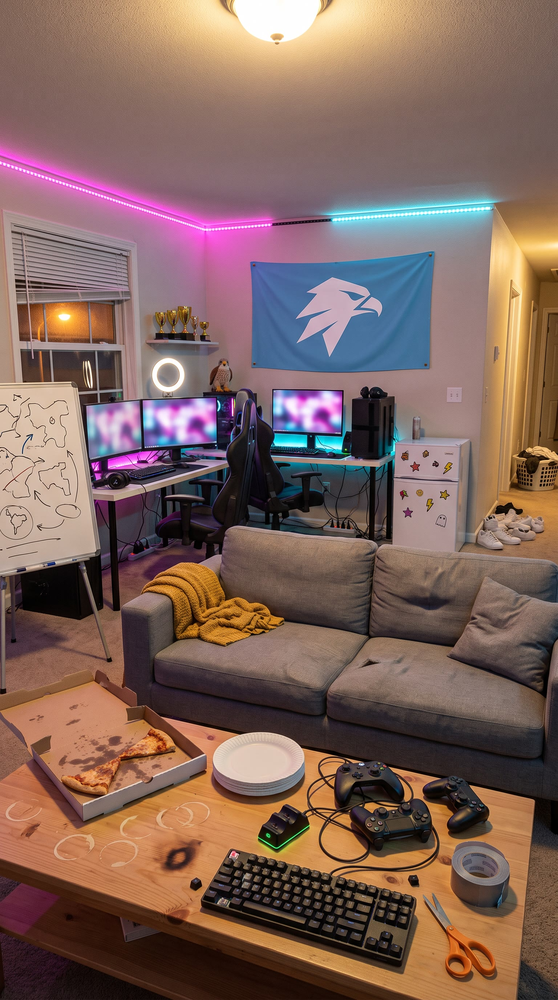
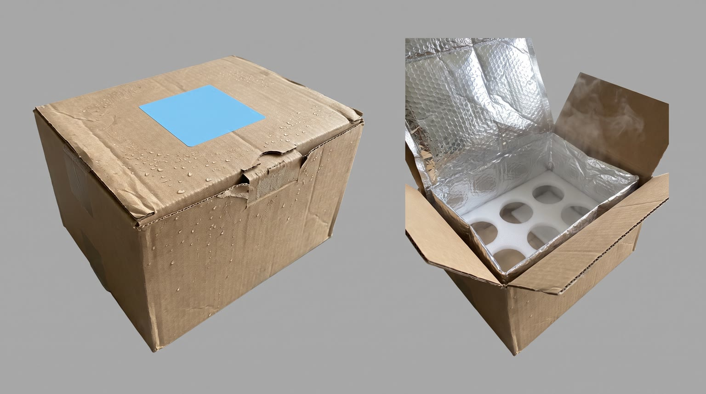
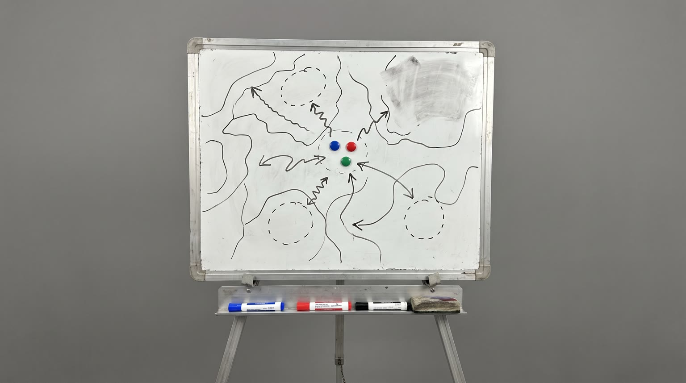
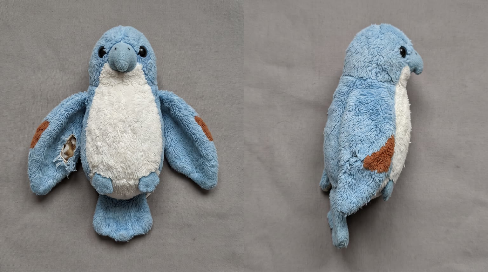

All templates · template.json · original storyboard
Unboxing / first impressionsunboxing-01-the-dropThe Drop
The night before their first big tournament, a box lands at an esports team house. The captain opens it on camera, the squad gets its first try of {{product.name}}, and three scrims later they are still winning.
Fit by product type
| ingested | great | a cold box of team fuel opened and tried together is the format's native moment |
| applied | good | tubes and jars tried on the backs of hands in front of the group; the three-way first try reads slightly staged |
| worn | great | matching hoodies, headsets, glasses or socks pulled on together right there, team-kit energy |
| handheld | great | controllers, mice, earbuds and gadgets lifted from foam cut-outs and switched on; the gaming world fits perfectly |
| carried | good | gear bags and cases unzipped on the coffee table, one per player; the box gets big |
| home | stretch | desk-scale items (lamp, desk mat, speaker, cushion) unpack and set up at the stations; big items arrive in a floor box and the three-way first try becomes taking turns |
| consumable | great | snack and hydration packs torn open together, several per player |
Refuses: products for children; alcohol; sleep aids or sedatives (the story is staying sharp for scrims); furniture too big to come through a front door in one box; anything that needs assembly before it works on camera; prescription or regulated drugs
Cast, world and props (shipped with the template)







- Kestrel Six is a three-player arena team founded 14 months ago. Kiara, Owen and Noor split the rent on a tired split-level in suburban Columbus, Ohio, and the landlord does not know about the 40 feet of RGB strip.
- The Coldharbor Invitational is their first live LAN event: 16 teams, a 25,000 dollar prize pool, and they got in as the 16th seed off the last qualifier, on a tiebreak.
- Owen built all three PCs out of used parts; his own tower's side panel has been held on with velcro strips since it fell off in March.
- Noor streams practice to about 900 regulars every night. A fist-sized plush kestrel a viewer mailed her sits on top of her monitor and has been on stream for every win.
- Their part-time coach Dez promised the squad a box of team gear if they qualified. He dropped it on the porch at 10:07pm and drove off honking twice.
Script: what each line must do
Right column is the worked example for Red Bull Sugarfree.
| Time | Speaker | Intent (template) | Example |
|---|---|---|---|
| 0.3-2.1 | kiara | Fixed: Tournament's tomorrow. And it just landed. Max 8 words. Delivery: breathless grin, hauling the box, loud enough for the house | Tournament's tomorrow. And it just landed. |
| 2.5-3.9 | owen | Curiosity: the skeptic notices one physical detail of the sealed box that fits the product (cold for chilled products, heavy, light, rattling, soft, a smell) and asks about it in a two-question rhythm. the detail must match the box state shown in S01 to S03 for this archetype; it must not reveal what the product is; no claims Max 8 words. Delivery: deadpan then genuinely curious, leaning off the couch | Is that cold? Why is it cold? |
| 4.3-5.5 | kiara (off camera) | Fixed: Okay. Moment of truth. Max 5 words. Delivery: low and dramatic, hands on the tear strip | Okay. Moment of truth. |
| 6.6-7.9 | noor | First sight: Noor's unscripted-sounding gasp naming one visible feature of the product (its colour, shape or finish), without the brand. describe only what is visible in S04; no brand, no claims Max 7 words. Delivery: delighted gasp, peering into the box | Oh, it's the silver ones. |
| 8.5-11.4 | kiara | Product line: say {{product.name}} clearly while it is held to the lens, then the ONE benefit from product.benefits that matters most the night before a tournament. benefit comes only from product.benefits, reworded no further than person and tense; brand spelled phonetically in the video prompt using product.phonetic Max 12 words. Delivery: clear, proud, a touch slower on the name, like presenting a trophy | Red Bull Sugarfree. Same benefits as the original. No sugar. |
| 14.3-15.4 | owen | Fixed: Okay, that's good. Max 5 words. Delivery: surprised, grudging, nodding slowly | Okay, that's good. |
| 16.0-17.9 | noor | The benefit as a reaction tied to the task ahead: two or three quick words that restate a benefit from product.benefits, then 'Queue us up.' must end with 'Queue us up.'; benefit comes only from product.benefits, reworded no further than person and tense; no numbers or performance claims unless the page states them word for word Max 7 words. Delivery: fast, hyped, already pulling her headset on | Alert. Focused. Queue us up. |
| 22.4-23.8 | owen | Fixed: GG. That's three straight. Max 5 words. Delivery: voice cracking with excitement, standing, hands on head (GG said as 'jee jee') | GG. That's three straight. |
| 25.4-29.6 | kiara | In-world CTA from the person who opened it: 'Get yours before game day.' then product.tagline if the page has one, else a 3 to 5 word line tying the product to game day. must open with 'Get yours before game day.'; tagline verbatim from the page if it exists; brand spelled phonetically in the video prompt using product.phonetic Max 10 words. Delivery: direct to lens, captain's grin, raises the product on the tagline | Get yours before game day. Wiiings without sugar. |
Product-adjacent props by type
| ingested | Dez's cold box exactly as in the prop reference: crinkled silver insulated liner, white foam insert with round slots holding the product chilled, wisps of cold vapour, condensation on the kraft |
| applied | the same kraft box shell and sky-blue sticker, the insert swapped for white tissue paper and crinkle paper with the product nested in it, one per player |
| worn | the same kraft box shell and sky-blue sticker, the insert swapped for folded white tissue with the product folded inside, one per player |
| handheld | the same kraft box shell and sky-blue sticker, the insert swapped for shaped white foam cut-outs holding the product, one per player |
| carried | the same kraft box shell and sky-blue sticker, the insert swapped for crinkle paper with the product folded flat inside, one per player |
| home | a larger plain kraft box with the same sky-blue sticker, the insert swapped for shaped white foam corners around the product; if it is bigger than the coffee table, the box sits on the floor in front of the couch |
| consumable | the same kraft box shell and sky-blue sticker, the insert swapped for crinkle paper with packs of the product, several per player |
Shots and how the product appears for each type
S01 · 0 to 2.2 s · background
Kiara hauls a plain kraft box through the front door at night straight toward the lens, grinning; the box hints at what is inside.
| ingested | the box held in both arms close to the lens, slightly frosted with a few cold water beads, the product sealed inside |
| applied | the box held in both arms close to the lens, clean, dry and sealed, the product hidden inside |
| worn | the box carried easily on one forearm close to the lens, light and soft-cornered, sealed, the product hidden inside |
| handheld | the box held carefully level in both hands close to the lens as if something fragile is inside, sealed |
| carried | the box held in both arms close to the lens, wide, flat and light, sealed |
| home | a larger box walked in end-first with both arms, its top edge close to the lens, sealed, heavy enough that she leans back |
| consumable | the box held in both arms close to the lens, sealed, something inside shifting softly as she walks |
S02 · 2.2 to 4.0 s · background
The box lands in front of the couch (on the coffee table, or the floor if it is big); Owen, headset pushed back, leans off the couch and points at it.
| ingested | the box on the wooden coffee table, a faint wisp of cold vapour at its seam and beads of condensation on the cardboard |
| applied | the box on the wooden coffee table, clean and sealed, a curl of white tissue paper poking out of one corner |
| worn | the box on the wooden coffee table, dented softly where it landed, sealed, a corner of white tissue poking out |
| handheld | the box sitting heavy and square on the wooden coffee table, sealed, a strip of white foam visible at one seam |
| carried | the box lying flat and wide across the wooden coffee table, sealed, a tuft of crinkle paper at one seam |
| home | the larger box on the floor in front of the coffee table if it is too big for the table, sealed, shaped white foam corners visible at one seam |
| consumable | the box on the wooden coffee table, sealed, a tuft of crinkle paper at one seam |
S03 · 4.0 to 6.2 s · background
Top-down: two hands with silver rings pull the tear strip across the box lid; the first glimpse of the insert escapes the seam.
| ingested | a small puff of white cold vapour escaping from the opening seam, condensation beads on the cardboard |
| applied | a flash of white tissue paper showing through the opening seam |
| worn | a flash of folded white tissue showing through the opening seam |
| handheld | a line of white foam insert showing through the opening seam |
| carried | crinkle paper spilling from the opening seam |
| home | shaped white foam corners showing through the opening seam of the larger box |
| consumable | crinkle paper and one corner of a pack showing through the opening seam |
S04 · 6.2 to 8.2 s · reveal
From inside the box: the four flaps open, three faces lean in over the edge lit by a soft white glow; the product in its insert at the bottom of frame.
| ingested | the tops of several of the product (each {{product.visual}}) standing in white foam slots inside a crinkled silver insulated liner, soft white cold vapour drifting up |
| applied | three of the product (each {{product.visual}}) nested in white tissue paper, labels up |
| worn | three of the product (each {{product.visual}}) folded in white tissue paper, the top one showing its best detail |
| handheld | three of the product (each {{product.visual}}) sitting in shaped white foam cut-outs, logos up |
| carried | three of the product (each {{product.visual}}) folded flat in crinkle paper, logos up |
| home | one of the product ({{product.visual}}), or its top edge if it is large, held in shaped white foam corners |
| consumable | several packs of {{product.visual}} in crinkle paper, labels up |
S05 · 8.2 to 11.6 s · hero
Kiara lifts the product out of the box and holds it to the lens beside her face, label forward.
| ingested | holds {{product.visual}} up toward the lens beside her face, about 40 cm from the camera, unopened, upright, frost and condensation beads on it, a thin curl of cold vapour, four fingers behind it and thumb in front |
| applied | holds {{product.visual}} up toward the lens beside her face, about 40 cm from the camera, sealed, a scrap of tissue paper still clinging to it, pinched between thumb and two fingers |
| worn | holds {{product.visual}} up against her chest or beside her face toward the lens, just shaken out of its tissue, its front and best detail to camera |
| handheld | holds {{product.visual}} up toward the lens beside her face on her open palm, about 40 cm from the camera, logo to camera |
| carried | holds {{product.visual}} up by its handle beside her face toward the lens, front panel and logo to camera |
| home | kneels beside the open box and lifts {{product.visual}} out, or tips it upright if it is large, so it stands beside her face toward the lens, front to camera |
| consumable | holds one pack of {{product.visual}} up toward the lens beside her face, about 40 cm from the camera, label flat to camera, four fingers behind it and thumb in front |
S06 · 11.6 to 14.0 s · in_use
Three hands, the first try together over the coffee table.
| ingested | each holding exactly one of the product ({{product.visual}}), upright, labels mostly facing camera, all three opening them at the same moment with a tiny spray |
| applied | each holding one of the product ({{product.visual}}), all three squeezing or dabbing a little onto the backs of their other hands at the same moment, labels mostly facing camera |
| worn | each holding one of the product ({{product.visual}}) by its edges, all three pulling them on or holding them up against themselves at the same moment |
| handheld | each holding one of the product ({{product.visual}}), all three switching them on or snapping them onto their gear at the same moment, small lights or clicks answering |
| carried | each holding one of the product ({{product.visual}}), all three unzipping or unclipping them at the same moment, logos mostly facing camera |
| home | all three reaching in together to stand {{product.visual}} up on the table or the floor and switch it on or try it at the same moment |
| consumable | each holding one pack of {{product.visual}}, all three tearing them open at the same moment, labels mostly facing camera |
S07 · 14.0 to 15.8 s · in_use
Owen tries the product for the first time, eyebrows up, grudging nod.
| ingested | He holds {{product.visual}} in his own right hand at chin height, just lowered from his first sip, opened, upright, label partly toward camera, held away from his lips |
| applied | He rubs a little of {{product.visual}} into the back of his hand with his thumb, the product held in his other hand at chest height, label partly toward camera |
| worn | He is now wearing {{product.visual}}, tugging it once to check the fit |
| handheld | He turns {{product.visual}} over in his right hand at chest height, just switched on or snapped into place, logo partly toward camera |
| carried | He has {{product.visual}} open on his lap, one hand inside checking the pockets, logo partly toward camera |
| home | He leans back and tries {{product.visual}} beside the couch (sitting on it, switching it on or leaning on it), the product fully visible |
| consumable | He holds the open pack of {{product.visual}} at chest height, just having tried one, label partly toward camera |
S08 · 15.8 to 18.2 s · in_use
Noor, the product in hand or on, gets ready for the scrim and points at the stations.
| ingested | holding {{product.visual}} at chest height in one hand, opened, upright, label toward camera, while pulling a plain black over-ear headset onto her head with the other hand |
| applied | holding {{product.visual}} at chest height in one hand, capped, label toward camera, while pulling a plain black over-ear headset on with the other hand |
| worn | wearing {{product.visual}}, pointing at the gaming stations with one hand |
| handheld | holding {{product.visual}} in one hand at chest height, logo toward camera, pointing at the gaming stations with it |
| carried | swinging {{product.visual}} onto one shoulder, logo toward camera, pointing at the gaming stations with her free hand |
| home | turning away from {{product.visual}}, now set up and on at her station behind her, pointing at the stations |
| consumable | holding the open pack of {{product.visual}} at chest height, label toward camera, while pulling a plain black over-ear headset on with the other hand |
S09 · 18.2 to 24.6 s · background
1am practice: three players at their stations, monitors bright with abstract colour, the product at the stations; Owen jumps up, hands on his head, celebrating a third straight win.
| ingested | On each desk stands exactly one of the product ({{product.visual}}) |
| applied | On each desk sits one of the product, capped ({{product.visual}}) |
| worn | All three are wearing {{product.visual}} |
| handheld | Each player is using or has beside their keyboard one of the product ({{product.visual}}) |
| carried | One of the product ({{product.visual}}) hangs from the back of each gaming chair |
| home | {{product.visual}} is set up and on at the stations |
| consumable | An open pack of {{product.visual}} lies on each desk |
S10 · 24.6 to 30 s · hero
Kiara spins her chair to the lens, headset around her neck, and holds up the product for the CTA and tagline. End card in post.
| ingested | holding {{product.visual}} up toward the lens at shoulder height, opened, upright, four fingers behind it and thumb in front |
| applied | holding {{product.visual}} up toward the lens at shoulder height, label to camera, four fingers behind it and thumb in front |
| worn | wearing {{product.visual}} and pointing at it with her thumb, the product fully in frame |
| handheld | holding {{product.visual}} up toward the lens at shoulder height, logo to camera |
| carried | holding {{product.visual}} up by its strap toward the lens, logo to camera |
| home | leaning aside so {{product.visual}}, set up and on at her station behind her, fills the frame beside her, one hand presenting it |
| consumable | holding the pack of {{product.visual}} up toward the lens at shoulder height, label to camera |
Generation units (templated prompts)
U1 · 9 s
9:16 candid smartphone unboxing video filmed handheld by a friend in an esports gaming house at 10pm, magenta and cyan RGB light, phone noise, not cinematic. Shot 1 (0 to 2.2 s): @Image1 (Kiara) hauls a plain kraft box with no labels through the front door straight toward the lens, {{action.S01}}, grinning, breathless: "Tournament's tomorrow. And it just landed." Whip pan. Shot 2 (2.2 to 4 s): the box lands in the living room from @Image4, {{action.S02}}; @Image2 (Owen) leans off the couch, points, deadpan then curious: "{{line.L2}}" Hard cut. Shot 3 (4 to 6.2 s): straight top-down, Kiara's hands rip the tear strip across the lid, {{action.S03}}; her voice, low and dramatic: "Okay. Moment of truth." Hard cut. Shot 4 (6.2 to 9 s): low POV from inside the box, the flaps fold open, Kiara, Owen and @Image3 (Noor) lean over the edge lit by a soft white glow, at the bottom of frame {{action.S04}}, the product exactly as @Image5; Noor gasps: "{{line.L4}}" Native sound: door, box thud, loud tape rip, the insert rustling, cardboard flaps, overlapping voices. No music. No text on screen, no labels on the box, no logos except the product's own.U2 · 4 s · exact-risk
9:16 candid smartphone unboxing video in a gaming house, RGB light. Handheld close-up: @Image2 (Kiara) {{action.S05}}, holds it still and says clearly and proudly, a touch slower on the name: "{{line.L5}}" (say the brand as {{product.phonetic}}). Keep the product's shape, colours and label exactly as @Image1; it is lit by white light so the colours stay true. One product only. Native sound: the insert rustling, her voice, a teammate's 'ooh'. No music.U3 · 13 s
9:16 candid smartphone video in an esports gaming house, magenta and cyan RGB light, phone noise, fast handheld whip pans. Shot 1 (0 to 2.4 s): three adult hands over the coffee table, {{action.S06}}, the product exactly as @Image4, laughter. Whip pan. Shot 2 (2.4 to 4.2 s): reaction close-up of @Image1 (Owen) on the couch, {{action.S07}}, eyebrows up, grudging: "Okay, that's good." Whip pan. Shot 3 (4.2 to 6.6 s): @Image2 (Noor), {{action.S08}}, fast and hyped: "{{line.L7}}" Hard cut. Shot 4 (6.6 to 13 s): 1am, from behind the couch, the three at their gaming desks, monitors glowing with abstract colour and no interface, {{action.S09}}; keyboards clatter; Owen jumps up with both hands on his head, voice cracking: "GG. That's three straight." @Image3 (Kiara) turns to him laughing, Noor raises her fists. Each person has at most one of the product. Native sound: the product's own sounds, laughter, keyboard and mouse clicks, whoops. No music. No logos, no readable screens.U4 · 6 s · exact-risk
9:16 candid smartphone video at 1am in a gaming house. Handheld medium close-up that settles still: @Image2 (Kiara) spins her gaming chair to face the lens, headset around her neck, {{action.S10}}, lit by a warm desk lamp so the colours stay true; teammates blurred and cheering behind. She says directly, grinning, raising the product a little on the last words: "{{line.L9}}" (say any brand name as {{product.phonetic}}). The product does not bend, warp or change: keep its shape, colours and label exactly as @Image1. Keep the lower third clean. Native sound: chair creak, cheering, her voice. No music, no text.